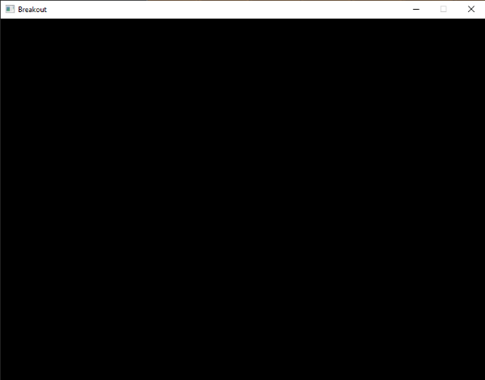

Setting up
In-Practice/2D-Game/Setting-up
Before we get started with the game mechanics, we first need to set up a simple framework for the game to reside in. The game will use several third party libraries of which most have been introduced in earlier chapters. Wherever a new library is required, it will be properly introduced.
First, we define a so called
The game class hosts an initialization function, an update function, a function to process input, and a render function:
class Game
{
public:
// game state
GameState State;
bool Keys[1024];
unsigned int Width, Height;
// constructor/destructor
Game(unsigned int width, unsigned int height);
~Game();
// initialize game state (load all shaders/textures/levels)
void Init();
// game loop
void ProcessInput(float dt);
void Update(float dt);
void Render();
};
The class hosts what you may expect from a game class. We initialize the game with a width and height (the resolution you want to play the game in) and use the
The
// Represents the current state of the game
enum GameState {
GAME_ACTIVE,
GAME_MENU,
GAME_WIN
};
This allows us to keep track of what state the game is currently in. This way, we can decide to adjust rendering and/or processing based on the current state of the game (we probably render and process different items when we're in the game's menu for example).
As of now, the functions of the game class are completely empty since we have yet to write the actual game code, but here are the Game class's header and code file.
Utility
Since we're creating a large application we'll frequently have to re-use several OpenGL concepts, like textures and shaders. It thus makes sense to create a more easy-to-use interface for these two items as similarly done in one of the earlier chapters where we created a shader class.
We define a shader class that generates a compiled shader (or generates error messages if it fails) from two or three strings (if a geometry shader is present). The shader class also contains a lot of useful utility functions to quickly set uniform values. We also define a texture class that generates a 2D texture image (based on its properties) from a byte array and a given width and height. Again, the texture class also hosts utility functions.
We won't delve into the details of the classes since by now you should easily understand how they work. For this reason you can find the header and code files, fully commented, below:
Note that the current texture class is solely designed for 2D textures only, but could easily be extended for alternative texture types.
Resource management
While the shader and texture classes function great by themselves, they do require either a byte array or a list of strings for initialization. We could easily embed file loading code within the classes themselves, but this slightly violates the
For this reason it is often considered a more organized approach to create a single entity designed for loading game-related resources called a
Using a singleton class with static functionality has several advantages and disadvantages, with its disadvantages mostly being the loss of several OOP properties and less control over construction/destruction. However, for relatively small projects like this it is easy to work with.
Like the other class files, the resource manager is listed below:
Using the resource manager, we can easily load shaders into the program like:
Shader shader = ResourceManager::LoadShader("vertex.vs", "fragment.vs", nullptr, "test");
// then use it
shader.Use();
// or
ResourceManager::GetShader("test").Use();
The defined
Program
We still need a window for the game and set some initial OpenGL state as we make use of OpenGL's blending functionality. We do not enable depth testing, since the game is entirely in 2D. All vertices are defined with the same z-values so enabling depth testing would be of no use and likely cause z-fighting.
The startup code of the Breakout game is relatively simple: we create a window with GLFW, register a few callback functions, create the
- Program: code.
Running the code should give you the following output:

By now we have a solid framework for the upcoming chapters; we'll be continuously extending the game class to host new functionality. Hop over to the next chapter once you're ready.